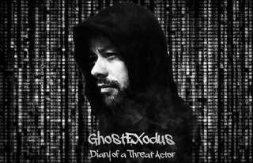

Threat Actor Attribution
Aliases, infrastructure, relationships, public records, timelines and corroborating evidence.
DIARY OF A THREAT ACTOR

I am a cybersecurity writer, OSINT investigator, cybercrime researcher, and former black-hat hacker. My work now focuses on cybercrime, threat actor and target attribution, hacker culture, ransomware, insider threats, online investigations, and the human side of security.
This site is the independent home for my writing, research, open-source projects, media appearances, and the history behind the GhostExodus name.
Midnight in the War Room — official trailer.
GhostExodus is the online identity of Jesse McGraw, a former black-hat hacker and insider threat who now works in cybersecurity writing, open-source intelligence, cybercrime research and online investigations.
The early GhostExodus story is inseparable from the Electronik Tribulation Army and the consequences of crossing legal and ethical boundaries. After federal prosecution and years in prison, the work changed direction: away from intrusion and toward research, writing, education, attribution and building tools for investigators.
Today the focus is on understanding how cybercriminals, threat actors, underground communities and online identities operate, and translating that knowledge into reporting, investigative work and practical open-source software.
The story has been covered in the Cybernews documentary How Hacking Ruined My Life: Ghost Exodus Story, SecurityWeek's Hacker Conversations, and the Semperis documentary Midnight in the War Room.
CURRENT MODE: RESEARCH // WRITE // INVESTIGATE // BUILD
Aliases, infrastructure, relationships, public records, timelines and corroborating evidence.
Open-source collection, identity resolution, social-media intelligence, evidence preservation and investigative workflows.
History, underground communities, hacktivist movements, behavioural patterns and cybercrime culture.
Actors, campaigns, tactics, criminal ecosystems, insider threats and the human context behind incidents.
Public SDR, geospatial data, live-feed research, mapping and investigative correlation.
Lawful research supporting online safety, victim protection and evidence-based investigations.
A Windows 98-inspired OSINT and case-management desktop application built with Electron, React and TypeScript. Retro shell, serious investigative workspace.
Open GitHub RepositoryA SOCMINT/OSINT workstation for campaign-scoped X monitoring, local evidence preservation, network analysis, historical archiving and keyword intelligence.
Open GitHub RepositoryA dedicated console for browsing public internet-connected SDR receivers, launching live feeds, bookmarking stations, taking notes and archiving captured transmissions.
Open GitHub RepositoryIndependent OSINT and online investigative work focused on identities, aliases, digital footprints, relationships, public records and evidence-based attribution.
Cybernews documentary tracing the GhostExodus story and the consequences that followed.
Cybernews interview excerpt about incarceration and what happens after a hacking case becomes a prison sentence.
Official trailer for the Semperis cyberwar documentary featuring GhostExodus.
For writing, research, OSINT, collaboration, project questions or media enquiries, use one of the public channels below.
This site uses TraceMyIP.org analytics. The visitor counter is intentionally hidden. Embedded videos use YouTube's privacy-enhanced domain.